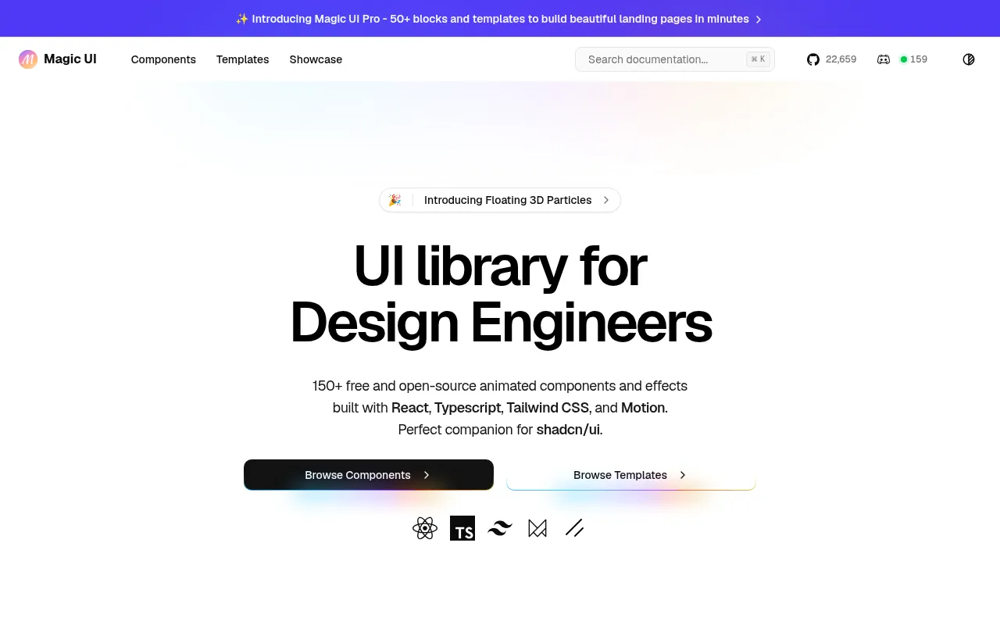
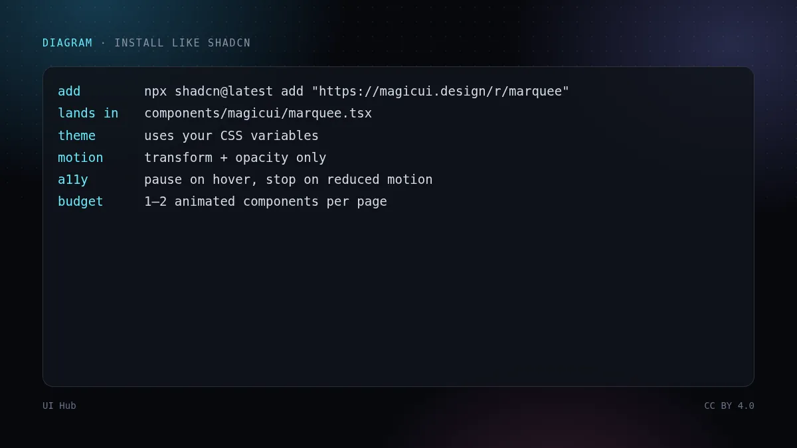
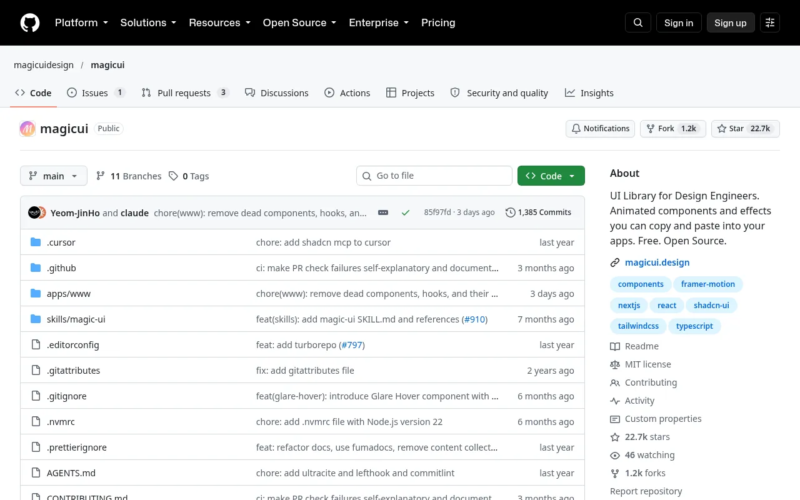

Magic UI 是一套开源（MIT 许可）的动效组件库，定位是 shadcn/ui 的搭档。组件用 shadcn CLI 从 Magic UI 的 registry 添加，源码直接落在你的仓库里可以随便改，而不是藏在依赖包里。


持续运动的元素（跑马灯、环绕动画）应在悬停时暂停，并在 prefers-reduced-motion 下停止；WCAG 2.2.2 要求超过五秒的运动内容必须能暂停。优先用 transform 和 opacity 做动画，浏览器可以低成本合成。

给 shadcn 项目加动效，Magic UI 是最省事的，因为安装方式和 Token 变量都一致。风险和所有特效库一样：每页用一两个，其他部分保持安静。